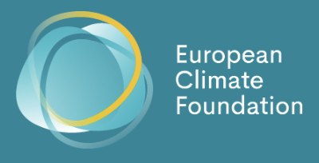

012026

International NGO·European Climate Foundation
Funder Presentations
Ongoing collaboration on narrative strategy, copy, and design of funder presentation decks at one of Europe's leading climate foundations, built for boards and major donors.